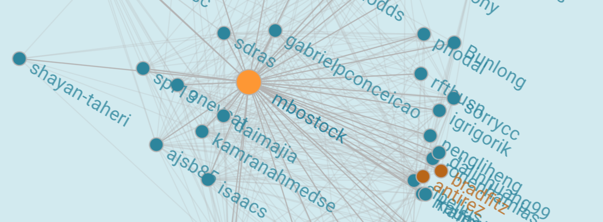

Introduction to social network
In this workshop, we will try to create an interactive force-directed network diagram from the D3.js framework. Typically, this type of graph is adopted for displaying relations within a social network, but its use extend far beyond social sciences. For example, one could device a similar network depicting the correlation among variables of a large dataset (e.g. the results within the students dataset of workshop 1) or, from the realm of NLP, the co-occurrence of words within tweets.
Loading the data
We will be using the MUSAE GitHub Social Network dataset from Kaggle. This data covers the social network of developers on github. The authors provide us with three files, two of which we will need to display the network:
- a set of nodes containing the name of the developers
- a set of edges depicting the relationships among developers
- Start a new project
- Load the two files containing the data
library(data.table)
library(magrittr)
library(networkD3)
edges <- fread("dat/git_edges.tsv")
nodes <- fread("dat/git_nodes.tsv")
Reducing size
Unfortunately, visualizing a social network is really only feasible with relatively small networks. Once we start talking thousand of nodes, you will need a bigger boat. Not that the D3.js network is slow, it is not. It has to do with the number of edges increasing exponentially with increasing number of nodes.
- Pick the 40 most popular developers, i.e. the ones with the most connections, and adjust the edges and nodes datasets accordingly
popular <- edges %>% unlist %>%
table %>% sort %>% rev %>%
head(40) %>% names
edges_sel <- edges[Source %in% popular & Target %in% popular]
edges_sel[, Source := match(Source, popular) - 1]
edges_sel[, Target := match(Target, popular) - 1]
nodes_sel <- nodes[ID %in% popular]
nodes_sel[, ID := match(ID, popular) - 1]
The network
Drawing the network is really easy. Because however it is different from any other plotting system in R, it takes a bit time to get accustomed to. For example, the color palette is being written in Javascript.
- Start by creating a palette with your two favourite colors
palette(c("#2D859C", "#B86619"))
Now we have to make sure to generate a Javascript statement that looks like this:
d3.scaleOrdinal().
domain(["0", "1"]).
range(["#2D859C", "#B86619"]);
- Generate the above JS code based on the value of the palette
color_scale <- paste0(
"d3.scaleOrdinal().domain([\"0\", \"1\"])",
".range([\"",
palette()[1:2] %>% paste0(collapse = "\", \""), "\"]);")
Indeed, also the content of the domain function call could be generated from the unique values in the node groups instead of fixing it to contain ["0", "1"]. Notice the use of escapes for inserting double quotes.
Now that we have the colors covered, we can call the forceNetwork function of the networkD3 package.
forceNetwork(
height = 600,
width = 600,
Links = edges_sel,
Nodes = nodes_sel,
Source = "Source",
Target = "Target",
NodeID = "Name",
Group = "Group",
bounded = TRUE,
opacityNoHover = .8,
linkColour = "#B3B3B3",
zoom = TRUE,
colourScale = JS(color_scale),
legend = TRUE,
fontFamily = "Roboto",
fontSize = 16,
charge = -1,
opacity = 1,
linkDistance = 200)
Let us go over the arguments one-by-one:
height = 600: set canvas width to 600 pixelswidth = 600: set canvas height to 600 pixelsLinks = edges_sel: attach edge datasetNodes = nodes_sel: attach node datasetSource = "Source": define the variable name containing the source of the relationshipsTarget = "Target": define the variable name containing the target of the relationshipsNodeID = "Name": define the variable name containing the label to be displayedGroup = "Group": define the variable name containing the (color) groupbounded = TRUE: wether nodes are allowed to fly out of the canvasopacityNoHover = .8: the opacity of the labels when no node is being hovered overlinkColour = "#B3B3B3": the color of the edgeszoom = TRUE: whether the network can be zoomed-in and outcolourScale = JS(color_scale): the JS color scalelegend = TRUE: whether to add a legendfontFamily = "Roboto": the font family for the labelsfontSize = 16: the font size for the labelscharge = -1: the amount of force that pull the nodes together (positive) or apart (negative)opacity = 1: the relative opacity of the graph elementslinkDistance = 200: the default length of the edges disregarding forces acting upon the nodes
See ?forceNetwork for more details. Mind that the code for the developer type was not clear from the data source, otherwise we could have replaced 0 and 1 by their proper type descriptions and the legend would adjust accordingly.
Vectors
The network is being rendered as an svg HTML element (scalable vector graphics). This has some very interested advantages. For one, it means the texts are not rendered as images, but remain searchable just like any other text on the report.
- Try to search text within your network (e.g. “mcanthony”) or that of this workshop page using your browser
Cascading style sheets
Hopefully you have heard of CSS before. It is the language used to style the web and it has been growing more popular in the past decades and will probably continue to do so for a while. Because the network is being rendered as pure HTML, elements of it can also be styled using CSS. In Rstudio, which supports multilingual development, you can add a css code chunk instead of an R code chunk.
- Add a
css code chunk in your report to adjust the border color and border stroke width of the nodes. Also, when finished growing after hovering over it, turn the node to a brighter orange:
g circle {
stroke: #B3B3B3 !important;
stroke-width: 1px !important;
}
g circle[r="11"]{
fill: #FD9734;
}
Workshop 3 Social network

3.1 Introduction to social network
In this workshop, we will try to create an interactive force-directed network diagram from the D3.js framework. Typically, this type of graph is adopted for displaying relations within a social network, but its use extend far beyond social sciences. For example, one could device a similar network depicting the correlation among variables of a large dataset (e.g. the results within the students dataset of workshop 1) or, from the realm of NLP, the co-occurrence of words within tweets.
3.2 Loading the data
We will be using the MUSAE GitHub Social Network dataset from Kaggle. This data covers the social network of developers on github. The authors provide us with three files, two of which we will need to display the network:
3.3 Exploring
data.tableobjects using thestrcommand until you understand how these are connected to each other3.4 Reducing size
Unfortunately, visualizing a social network is really only feasible with relatively small networks. Once we start talking thousand of nodes, you will need a bigger boat. Not that the D3.js network is slow, it is not. It has to do with the number of edges increasing exponentially with increasing number of nodes.
3.5 The network
Drawing the network is really easy. Because however it is different from any other plotting system in R, it takes a bit time to get accustomed to. For example, the color palette is being written in Javascript.
Now we have to make sure to generate a Javascript statement that looks like this:
Indeed, also the content of the
domainfunction call could be generated from the unique values in the node groups instead of fixing it to contain["0", "1"]. Notice the use of escapes for inserting double quotes.Now that we have the colors covered, we can call the
forceNetworkfunction of thenetworkD3package.Let us go over the arguments one-by-one:
height = 600: set canvas width to 600 pixelswidth = 600: set canvas height to 600 pixelsLinks = edges_sel: attach edge datasetNodes = nodes_sel: attach node datasetSource = "Source": define the variable name containing the source of the relationshipsTarget = "Target": define the variable name containing the target of the relationshipsNodeID = "Name": define the variable name containing the label to be displayedGroup = "Group": define the variable name containing the (color) groupbounded = TRUE: wether nodes are allowed to fly out of the canvasopacityNoHover = .8: the opacity of the labels when no node is being hovered overlinkColour = "#B3B3B3": the color of the edgeszoom = TRUE: whether the network can be zoomed-in and outcolourScale = JS(color_scale): the JS color scalelegend = TRUE: whether to add a legendfontFamily = "Roboto": the font family for the labelsfontSize = 16: the font size for the labelscharge = -1: the amount of force that pull the nodes together (positive) or apart (negative)opacity = 1: the relative opacity of the graph elementslinkDistance = 200: the default length of the edges disregarding forces acting upon the nodesSee
?forceNetworkfor more details. Mind that the code for the developer type was not clear from the data source, otherwise we could have replaced0and1by their proper type descriptions and the legend would adjust accordingly.3.6 Vectors
The network is being rendered as an
svgHTML element (scalable vector graphics). This has some very interested advantages. For one, it means the texts are not rendered as images, but remain searchable just like any other text on the report.3.7 Cascading style sheets
Hopefully you have heard of CSS before. It is the language used to style the web and it has been growing more popular in the past decades and will probably continue to do so for a while. Because the network is being rendered as pure HTML, elements of it can also be styled using CSS. In Rstudio, which supports multilingual development, you can add a css code chunk instead of an R code chunk.
csscode chunk in your report to adjust the border color and border stroke width of the nodes. Also, when finished growing after hovering over it, turn the node to a brighter orange: